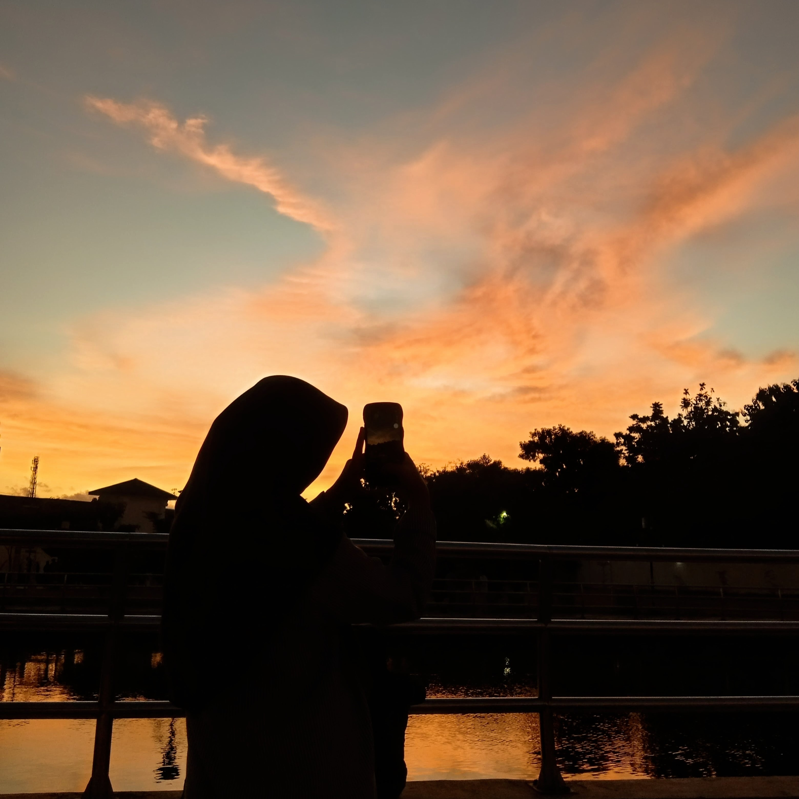

Home
My Gallery
Contact Me

Heyyow!, I’m Shaliha 🌅
An astrophile who finds peace in the sky
My Biodata ✨
Full Name
As-Sausan Shaliha Khadija
Place, Date of Birth
Yogyakarta, 18 november 2006
Current Residence
Bantul, D. I. Yogyakarta
Status
1st semester Information Systems student
at STMIK El Rahma Yogyakarta
Interests
Photo and video editing
Hobby
Sky photography
Skills
HTML and CSS basics, Photography.
Life Motto
“Be better than yesterday”